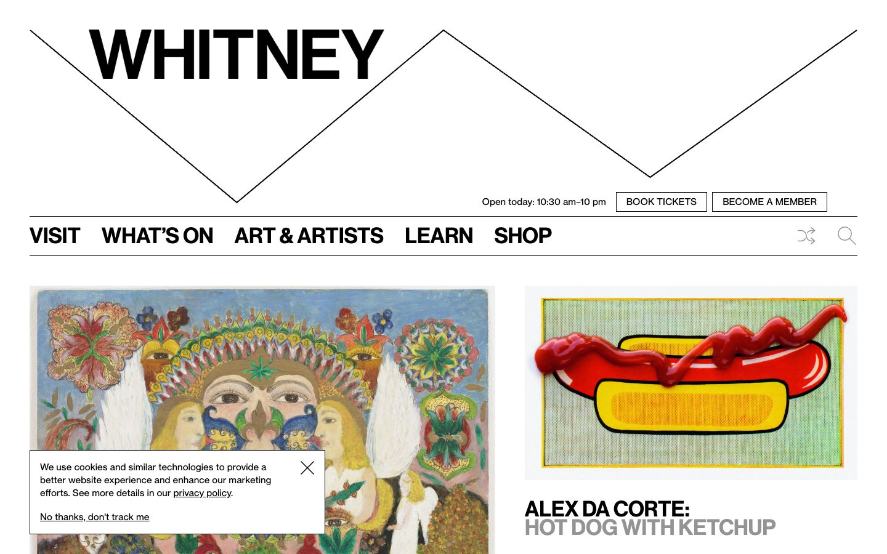

References / Website / 81
Whitney Museum of American Art website
The museum’s home page uses its responsive W, a zigzag line drawn across the page, above bold grotesque navigation between thin rules.
- Source
- whitney.org
- Creator
- Whitney Museum of American Art
- Style
- International Typographic Style (agent-proposed, not yet reviewed by a person)
- Moods
- Bold, graphic, objective
- Evidence
- Captured with
tools/capture.mjs(headless Chrome, 1440 × 900) on 25 September 2026 and inspected. The screenshot shows the first viewport; the measurement covers up to four screens. A cookie notice covers part of the lower left of the screenshot. - Reviewed
- Rights
- Third-party work, stored with credit for commentary. License: unverified. Rights policy
Context
The Whitney’s graphic identity, the “responsive W”, was designed by Experimental Jetset in 2013 (studio archive). The studio has not been confirmed as the designer of the current website.
Observed
- A thin black zigzag line crosses the full width of the page and forms a large W.
- The word WHITNEY sits inside the first valley of the zigzag in heavy black capitals.
- “Open today: 10:30 am–10 pm” and two square outlined buttons, BOOK TICKETS and BECOME A MEMBER, sit at the right, above a thin rule.
- The navigation (VISIT, WHAT’S ON, ART & ARTISTS, LEARN, SHOP) is set in large bold black capitals, flush left, between two thin rules.
- Below, a wide image of a colorful painting and a narrower image of a hot dog with ketchup sit in two columns.
- The caption “ALEX DA CORTE: HOT DOG WITH KETCHUP” is set in bold capitals, the first line black and the second gray.
Why it belongs
The measurement finds only Neue Haas Grotesk (haas-grotesk-text and haas-grotesk-sign), square corners, no shadows, two CSS colors, and a size range of 3.25.
The zigzag is the identity’s one graphic form, and it is drawn with a thin line, not filled. This follows the style’s preference for simple geometric forms over illustration.
Borrow
Use one thin geometric line as the identity mark, and let type and rules do the rest of the work.
Measured
Machine-extracted by tools/extract-traits.js on . Full measurement.
- Type families
- haas-grotesk-text (80%), haas-grotesk-sign (20%)
- Type scale ratio
- 1.8
- Median radius
- 0 px
- Mean chroma
- 0
- Palette
- #ffffff 75%
- #000000 23%
- #949494 1%
- #666666 0%

